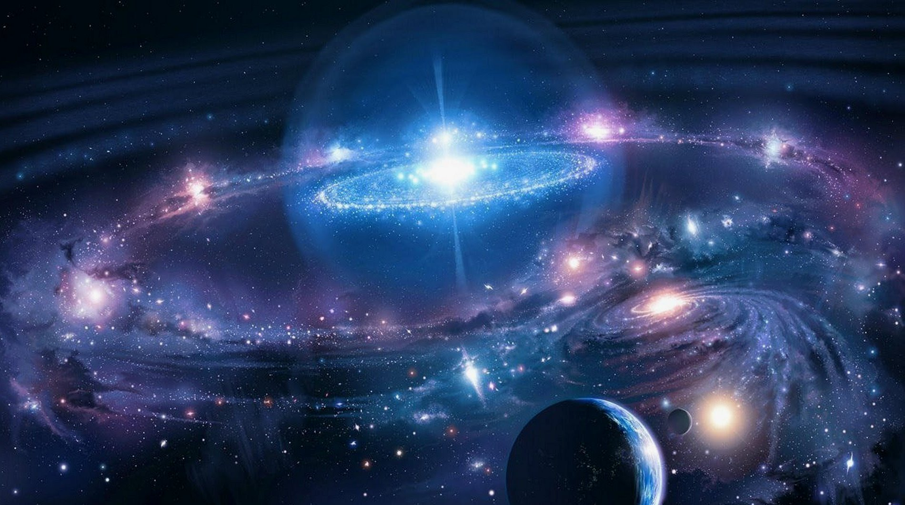

𝕿𝕬𝕻 𝕺𝕹 𝕿𝕳𝕰 𝕾𝕮𝕽𝕰𝕰𝕹 𝕿𝕺 𝕲𝕰𝕿 𝕸𝖀𝕾𝕴𝕮
Вселенная представляет для ученых бескрайний простор для исследований. Несмотря на то, что космические аппараты уже несколько десятилетий бороздят межпланетное пространство, человечеству до сих пор не удалось изучить и процента от его количества. Во вселенной существует множество галактик, в недрах которых скрываются миллиарды планет. И люди могут догадываться, что находится на них.
Вселенная появилась миллиарды лет назад, и люди до сих пор не смогли доказать истинные причины ее образования. Она представляет собой все существующее пространство. Галактики, звезды, планеты – все это часть необъятной Вселенной. Люди стараются изучать космос, но им предстоит проделать титаническую работу, прежде чем они смогут составить полное представление о его устройстве. Ежедневно астрономы из разных стран изучают новые области, но не могут добраться до границ мира. Причем исследования ведутся в разных направлениях: изучение Солнечной системы, соседних галактик, попытки установить общий размер Вселенной, подсчет космических объектов и т.д. Даже спустя десятки лет упорной работы 100%-е изучение внеземного пространства кажется недостижимой целью. Вселенная постоянно меняется, что усложняет процесс ее исследования и составления описаний определенных ее частей. Но одно можно сказать точно: ее границы так так велики, что недоступны для изучения.
Звезды, которые видит человек, являются частью галактики. Солнце тоже входит в ее состав и находится на большом расстоянии от других светил. Если взглянуть на Млечный Путь со стороны, то он будет напоминать гигантский диск с большим скоплением звезд в центральной части. И таких галактик во Вселенной большое множество. Интересный факт: Млечный Путь состоит примерно из 10 миллиардов звезд. Свету, чтобы добраться из одного конца галактики в другой, требуется 100 тысяч лет. Звезды распределены в галактиках неравномерно, в разных частях имеются плотные скопления, напоминающие шар. Также есть пространства, где на протяжении многих световых лет нет ни одного светила. Вокруг большинства звезд находятся планеты, обладающие уникальным внешним видом, атмосферой и другими особенностями. Также вокруг некоторых имеются спутники – небольшие космические объекты, удерживаемые за счет притяжения.
Галактик во Вселенной огромное множество, и многие имеют спиралевидную форму, которую хорошо заметно благодаря расположению светил. Такой тип называется протогалактиками. Ученые предполагают, что во время своего образования они вращались по кругу с большой скоростью, и постепенно замедлились. Другие галактики из-за сильного сжатия водородного газа не начали движение вокруг центральной оси и остались в форме эллипса. Межгалактическое пространство помимо пустоты может содержать различные объекты: пояса астероидов, кометы, карликовые планеты и т.д. Все вышеперечисленные объекты являются частью необъятной Вселенной. Причем регулярно рождаются новые звезды и планеты, из-за чего космос постоянно меняется.
В первом веке до нашей эры римский философ Цицерон использовал латинское слово “universum”, чтобы единым термином охарактеризовать все пространство вокруг. Это настолько понравилось другим мыслителям, что они позаимствовали у него выражение и начали использовать в аналогичном контексте. Словом “universum” называли все известные объекты: Землю, Солнце, далекие звезды, планеты, живых созданий и т.д. Сейчас термин потерял латинское окончание и звучит на английском как “universe“, что означает “вселенная”. И пока римляне придумывали, как охарактеризовать пространство вокруг, греки тоже старались от них не отставать. Они ввели термин “космос”, что переводится как “мир”. Со временем оба слова начали использоваться для описания пространства вокруг. Однако под “Вселенной” больше подразумеваются галактики, звезды и планеты, а под “космосом” пространство между ними.
